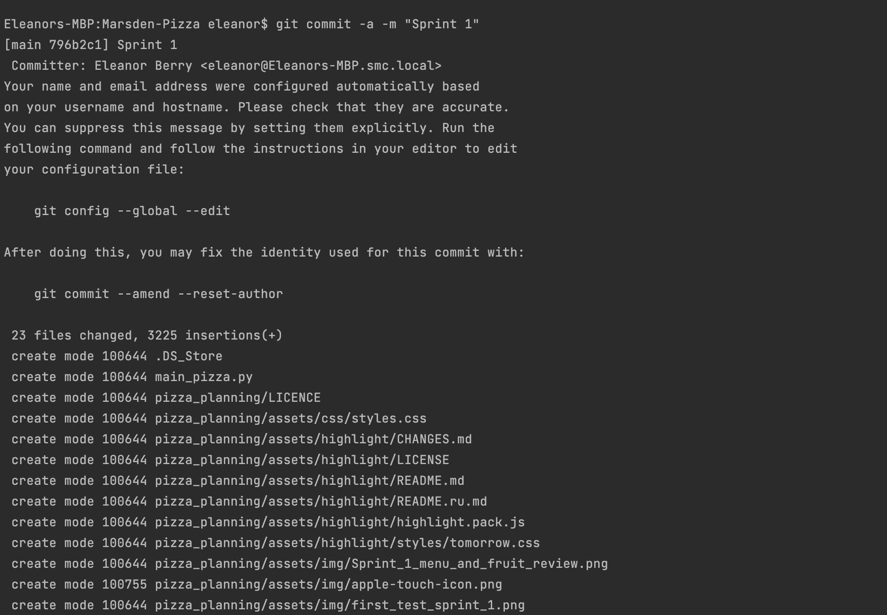

Brief
The purpose of this project is to create a program that would enable Marsden Pizzas to computerise their phone orders. Specifically, to be able to enter customer details,pizza(s) ordered and pick-up or delivery requirements into a computer and have it display the delivery details, itemised order, and total cost in an automated receipt.
I also need to make sure that my program complies effectively with relevant implications, particularly cultural, usability, functionality, sustainability and future proofing. Relevant implications are possible effects of a project or assessment could have that you need to plan for. Cultural is making sure that foreign characters are used where appropriate and making sure that nothing is culturally insensitive. Usability is making sure that the program is consistant and easy for the user to use. This can be achieved through connection to real world concepts and effective error prevention through validation and other means. Functionality is whether my program works as it is intended to, as efficiently and reliably as possible. Sustainability and future proofing is making sure that my program is easy to update and fix, as well as being easy to maintain and add new features to. On top of these my program will also make sure to incorporate the relevant implication security as the program requires personal information to be taken and stored as well as the need to add an element of security to the maintenance menu so that only authorised users can change the base information of the program.
Base Planning
Brainstorm
At the start of our project we brainstormed all of the different options and ideas for our program that would fulfill our brief, we decided to make a program that first gave the user a menu then gave the user to edit their order as they wish as well as printing off the order's receipt when the order is finalised. As is shown in the picture above we looked at the different ways in which we could make the ordering program functional and easy to use whilst still being considerate towards the user. These included; making sure that the user is asked whether they want their order delivered so that the extra cost can automatically be added to the order, the ability to add or remove pizzas.
Initial Project Backlog
Project Overview
Sprint One
Sprint One Brief
In the first version of my program I will implement a function to print out the available menu for the user and the option to quit. These two options will be presented in a menu format within a seperate function, making it easy to add new options to the menu. This helps my program comply well both the relevant implication sustainability and future proofing as it is easy to edit in future versions.
Sprint One Program Plan
Sprint One Board
Basic Test of Program
Through the testing of my first sprint of the program, I found that the basic structure of the program works and should provide a good base to build the rest of the program on. I also found that the basic validation for capitalizing all input worked however I will need to build upon this in future versions.
Sprint 1 reflection
In the first sprint of my program I found that my program works as expected and as I planned in the project overview. This should provide a good base upon which I can build the rest of the program. On top of this I found that the basic program complies well with the relevant implication sustainability and future proofing as it is easy to edit and add to in future versions because the two options within the menu function are functions within themselves. The basic menu is also easy for the user to understand making sure not to include technology jargon as to take the user into consideration.
In the next sprint I will add the option to specify whether the user wants to pick up or deliver and add costs to the order accordingly as well as collecting the relevant information. As this step will include collecting quite a bit of user input I will implement validation for any user input so that the program complies better with error prevention and is easier for the user to use. Since some of the information collected in sensitive (such as the address) I will make sure that the user is only asked for it if they have asked to have it delivered keeping the implication security and privacy in mind.
On top of this I will also make some changes to the program which I saw as a problem in the first sprint these being the fact that there are no column headers on the pizza menu which could be confusing for the user and adding such would make it better comply with usability. I will also add a welcome message for the user which will also help the program be more user-friendly.
Github Push
Sprint Two
Sprint Two Brief
The second sprint of my program will aim to specify whether the user wants their order picked up or delivered adding the relevant costs to the order and to ask for the relevant information collecting in dictionaries. Since this sprint is dealing with lots of user input I will implement validation to regulate the input so that the program complies well with error prevention. I will also add headings to the menu and a welcome message to make the program more user friendly.
Sprint Two Board
Sprint Two Program Plan
Basic Test of Program

Sprint 2 reflection
The aim of my second sprint of the program was to specify whether the user wants their order picked up or delivered adding the relevant costs to the order and ask for the relevant information collecting it in dictionaries. Since this sprint dealt with lots of user input I had to implement validation to regulate the input so that the program complies well with error prevention.
First of all, I began by writing the base function for choosing between delivery or pick up all of the information for this sprint was to be collected in a dictionary containing all of the user’s information. I also wrote a function that allows the user to review their information which includes validation to prevent errors such as forgetting to input the information after completing the order and asking the user whether they wish to redo the information if they have already filled it out. I also made sure to make it so that the user can confirm the information that they have given at the end of the delivery/ pick-up function by printing out the information in a dictionary the giving the user the choice to confirm (if they say no the dictionary is cleared and they are given the option to start again or return to the main menu).
In this sprint, I found that I was needing to validate lots of new input so I decided to design some flexible validation to fit around all of the varied input I was expecting. The first validation function that I designed was to regulate string input for things such as names and addresses (both of which were required in this sprint), with an insertable message and maximum and minimum length. I then designed a function to regulate integer input requiring much of the same parameters as the string validation whilst ensuring that the input consisted of integers. I also wrote a function that enabled me to quickly ask the user to confirm their input through the use of two options, for example, if I asked the user whether the phone number was correct or not and they have to enter yes or no. This ensures a higher level of user control. The last function that I implemented was to regulate user phone numbers and make sure that they were of the right length.
In the next sprint of my program, I will focus on being able to add pizzas to my order as well as being able to review the order. This sprint will also have to include validation as the user cannot add over 5 of a certain type of pizza and the user also has to choose the pizzas from a list that will require input validation. I will also have to ensure user control by enabling the option to confirm the pizzas ordered before they are added.
Sprint Three
Sprint Three Brief
In the third sprint of my program, I will focus on being able to add pizzas to my order as well as being able to review the order. This sprint will also have to include validation as the user cannot add over 5 of a certain type of pizza and the user also has to choose the pizzas from a list that will require input validation. I will also have to ensure user control by enabling the option to confirm the pizzas ordered before they are added.
Sprint Three Board

Basic Test of Program

Sprint 3 reflection
In the first version of my book club database all of the information is presented in a simple spreadsheet under different headings. This first version of the database has multiple large problems that might interfere with the effectiveness of our database, including; free spaces in columns, a book with multiple authors which is categorised underneath one and a general lack of continuity throughout the information. Through compiling the information for this first version of the database we also noticed that we are going to have to address issues like foreign characters in our cultural implications, as well as several implications regarding usability and the efficiency of the database. I also may have to make sure that the information is presented in a consistent format, for example I decided to present the publishing dates of the books in yyyy format to improve readability and consistency. I also made sure that the ISBN number was classified as text instead of an integer to ensure that it is saved in the correct format. I also decided to exclude the information on the illustrator and series in the first version of the database due to repeating data sets, which I plan on adding in a later version. This will make sure that my database is a lot easier to expand and add new fields to which in turn will make it better comply with the relevant implication future proofing.
Sprint Four
Sprint Four Brief
In the fourth sprint of my program, I would like to input a function that allows the user to edit or remove pizzas from the order. This function would have to validate the pizza chosen to edit as well as send an error message if the specified number of pizzas is in the order that the user isn’t in the order. After choosing to edit the order I would also like to confirm the changes made. This function should also give the user the option to clear the order completely. Much like the customer details option, I will also include validation to ensure that if the order is empty the user will be told to add pizzas first this ensures the relevant implication error prevention.
Sprint Four Board
Basic Test of Program

Sprint 4 reflection
In the first version of my book club database all of the information is presented in a simple spreadsheet under different headings. This first version of the database has multiple large problems that might interfere with the effectiveness of our database, including; free spaces in columns, a book with multiple authors which is categorised underneath one and a general lack of continuity throughout the information. Through compiling the information for this first version of the database we also noticed that we are going to have to address issues like foreign characters in our cultural implications, as well as several implications regarding usability and the efficiency of the database. I also may have to make sure that the information is presented in a consistent format, for example I decided to present the publishing dates of the books in yyyy format to improve readability and consistency. I also made sure that the ISBN number was classified as text instead of an integer to ensure that it is saved in the correct format. I also decided to exclude the information on the illustrator and series in the first version of the database due to repeating data sets, which I plan on adding in a later version. This will make sure that my database is a lot easier to expand and add new fields to which in turn will make it better comply with the relevant implication future proofing.
Sprint Five
Sprint Five Brief
In the fifth sprint of my program, I would like to input the option to edit the pizza list, this function will be enclosed in a separate menu protected by a passcode so as to ensure that only those authorised can change the information of the program. This separate ‘maintenance menu’ will require validation to add and remove new pizzas, change the details of certain pizzas such as the price. This function will also require confirmation for the changes made to the program.
Sprint Five Board
Basic Test of Program

Sprint 5 reflection
In the first version of my book club database all of the information is presented in a simple spreadsheet under different headings. This first version of the database has multiple large problems that might interfere with the effectiveness of our database, including; free spaces in columns, a book with multiple authors which is categorised underneath one and a general lack of continuity throughout the information. Through compiling the information for this first version of the database we also noticed that we are going to have to address issues like foreign characters in our cultural implications, as well as several implications regarding usability and the efficiency of the database. I also may have to make sure that the information is presented in a consistent format, for example I decided to present the publishing dates of the books in yyyy format to improve readability and consistency. I also made sure that the ISBN number was classified as text instead of an integer to ensure that it is saved in the correct format. I also decided to exclude the information on the illustrator and series in the first version of the database due to repeating data sets, which I plan on adding in a later version. This will make sure that my database is a lot easier to expand and add new fields to which in turn will make it better comply with the relevant implication future proofing.
Sprint Six
Sprint Six Brief
The sixth sprint in my program will print out a receipt for the order with all relevant details and instructions formatted and printed off when the order is finalised. When finalising the order the user will be asked to confirm and if there are any missing details such as customer information they will be asked to return and fill it out before finishing the order. This sprint will also serve to ensure that there are no bugs or small errors with the program.
Sprint Six Board
Basic Test of Program

Sprint 6 reflection
In the first version of my book club database all of the information is presented in a simple spreadsheet under different headings. This first version of the database has multiple large problems that might interfere with the effectiveness of our database, including; free spaces in columns, a book with multiple authors which is categorised underneath one and a general lack of continuity throughout the information. Through compiling the information for this first version of the database we also noticed that we are going to have to address issues like foreign characters in our cultural implications, as well as several implications regarding usability and the efficiency of the database. I also may have to make sure that the information is presented in a consistent format, for example I decided to present the publishing dates of the books in yyyy format to improve readability and consistency. I also made sure that the ISBN number was classified as text instead of an integer to ensure that it is saved in the correct format. I also decided to exclude the information on the illustrator and series in the first version of the database due to repeating data sets, which I plan on adding in a later version. This will make sure that my database is a lot easier to expand and add new fields to which in turn will make it better comply with the relevant implication future proofing.
Comprehensive Test
This is the final test of the program. + code warrant of fitness
Reflection
Discussing how the information from planning, testing and trialling of components assisted in the development of a high-quality outcome.
What did you learn from using your project management method, version control system, trailing and testing processes. How has this made your outcome better than it otherwise would have been?
Relevant Implications Summary
Cultural
In order to make sure that my database complies with the relavant implication cultural, I will use foreign characters and make sure that nothing is culturally insensitive.I made sure that my database was culturally appropriate through incorporating foreign characters that featured in the data set; for example the author Charlotte Brontë. I also ensured my compliance with this implication through checking for the correct spelling and punctuation of all the books and names featured in the database, to both ensure that the database is functional and respectful.
select book_table.book_title "Title", author_table.first_name "First Name", author_table.last_name "Last Name"
from book_table
join association_author on association_author.book_ID = book_table.book_ID
join author_table on association_author.author_ID=author_table.author_ID
where author_table.last_name like "Bront%"
Therefore proving that my database complies with the relevant implication cultural and End User considerations.
Usability
In my program I addressed the relevant iplication usability through making it easy to review and edit information. For example when using the program the user has to input personal information such as their name, phone-number and address, the program asks the user to confirm the information that they have inputted as well as giving the option to redo the options if they want to. My program also offers the option for the user to edit their order, I used these features to experiment with the flexibility of my program and how well it complies with the relevant implication future proofing and error prevention. I did this by making sure that my program is easy to update and add to as well as being easily fixable if there are errors.
Functionality
Through looking at my database I realised that there was an error in one of my sets of data, this being that the publishing date of The Testaments by Margaret Atwood was incorrect. I fixed this through the use of an update query. I used this error to experiment with the flexibility of my database and how well it complies with the relevant implication future proofing and . I did this by making sure that my database is easy to update and add to as well as being easily fixable if there are errors.Another way that I ensure that my database complied with this database was that I made sure that it was also easy to edit or delete information, as can be shown through the queries to delete all references of a particular aspect of the database.
Sustainability and Future Proofing
Through looking at my database I realised that there was an error in one of my sets of data, this being that the publishing date of The Testaments by Margaret Atwood was incorrect. I fixed this through the use of an update query. I used this error to experiment with the flexibility of my database and how well it complies with the relevant implication future proofing and . I did this by making sure that my database is easy to update and add to as well as being easily fixable if there are errors.Another way that I ensure that my database complied with this database was that I made sure that it was also easy to edit or delete information, as can be shown through the queries to delete all references of a particular aspect of the database.
End User Considerations
I addressed the relevant implication end user considerations through the use of aliases in my tables to present the information in my database in a way that is easier for the user to comprehend by utilising language that is readily understood. This also improves the aesthetic and minimalist design of the database ensuring that it appeals to the users eye and doesn’t confuse or distract from the purpose of the system.
Notes on privacy and data integrity
Due to the fact that some of the information collected in my program is sensitive particulary user details such as addresses, phone numbers and names, I decided that precautions should be added to ensure the user's privacy. One of the first things that I did was to make sure that the program doesn't ask for any more information than is relevant according to the user's choice, for example when specifying the method of delivery if the user chooses pick-up they will not be asked for their number or address. Since this information isn't collected and stored within the program the user's information is deleted as soon as the order has been completed and the program has been restarted. I also addressed the integrity of the program through amking sure that only those authorized can edit information such as the pizza menu through the use of a passcode. Another thing that I did to ensure the integrity of the program was to ensure that the data collected within the program in accurate and consistant. I did this through adding restrictions to the data types, eg. column asking for date will only accept integers to contol user input.